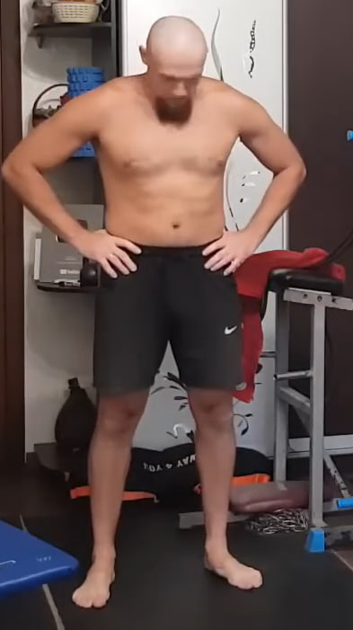
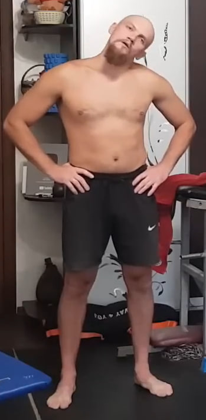
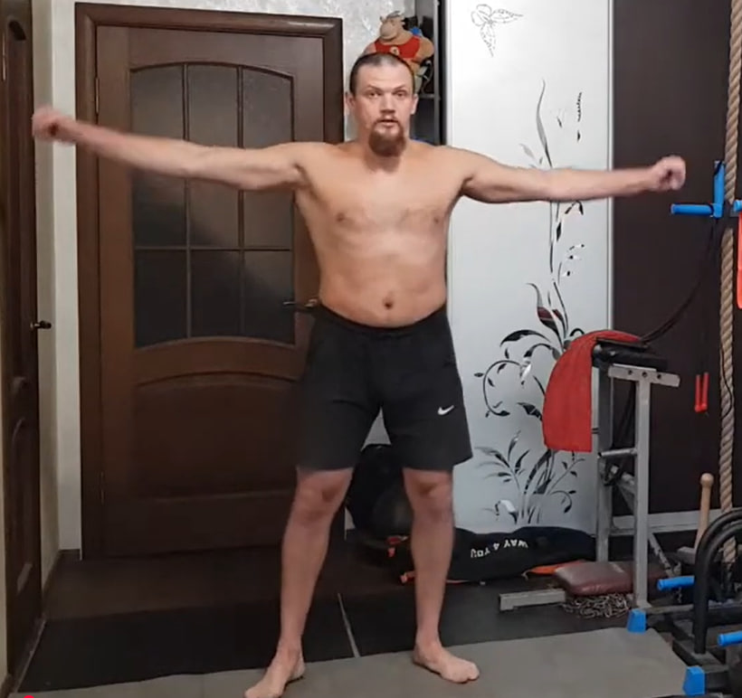
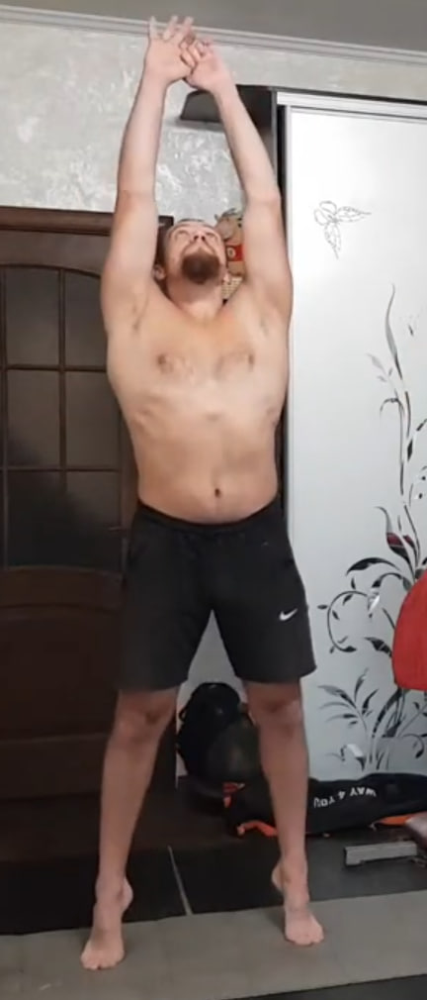
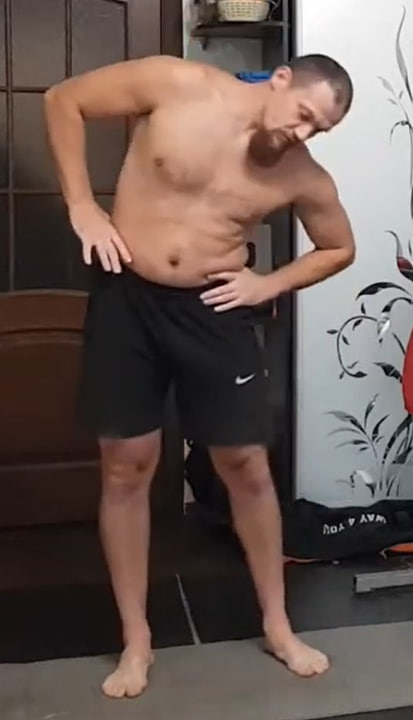
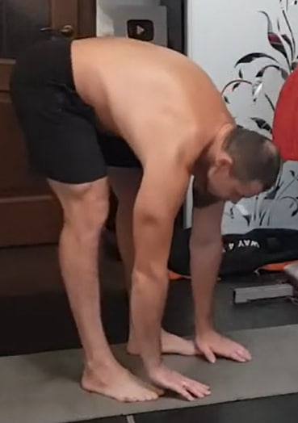
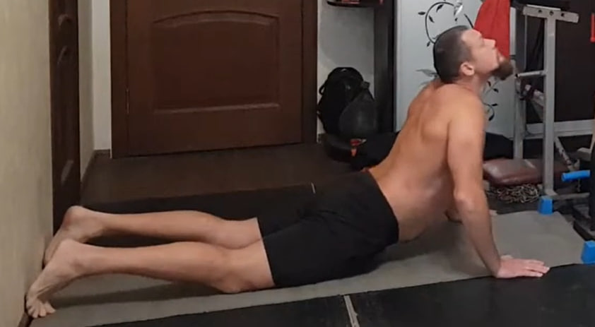
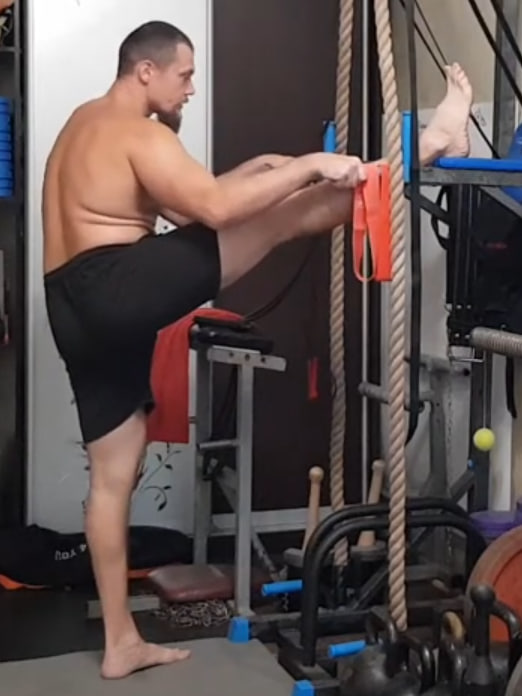
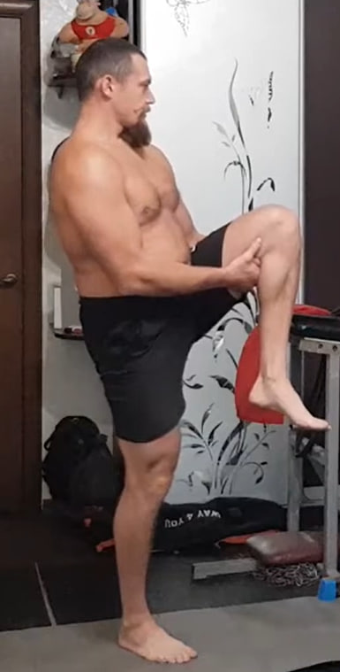
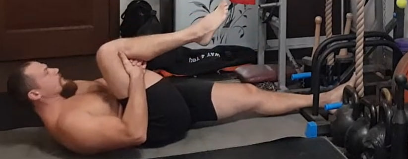

1. Flexión y extensión del cuello (10 repeticiones)

De pie, manos en la cintura. Inclina la cabeza hacia adelante llevando la barbilla al pecho. Vuelve al centro y luego mira hacia arriba, extendiendo el cuello sin tirones. El torso se mantiene estable.
Русский перевод
Стоя, руки на поясе. Наклони голову вперёд, прижимая подбородок к груди. Вернись в центр и затем мягко отведи голову назад, глядя вверх, без рывков. Корпус неподвижен.
2. Giros del cuello (10 repeticiones)


Desde la posición neutra, gira la cabeza a la izquierda como si quisieras mirar por encima del hombro. Vuelve al centro y gira a la derecha. Mantén los hombros bajos, sin inclinar la cabeza.
Ejecución: 10 repeticiones (5 por cada lado).
Русский перевод
Из нейтрального положения поверни голову влево, будто хочешь посмотреть через плечо. Вернись в центр и поверни вправо. Плечи держи опущенными, голову не наклоняй.
Выполнение: 10 повторений (по 5 в каждую сторону).
3. Inclinación lateral del cuello (10 repeticiones)

Inclina la cabeza llevando la oreja hacia el hombro sin elevar el hombro. Vuelve al centro y repite al otro lado. No gires la cabeza: solo inclinación lateral.
Ejecución: 10 repeticiones (5 por cada lado).
Русский перевод
Наклони голову, приближая ухо к плечу (плечо не поднимай). Вернись в центр и повтори в другую сторону. Голову не поворачивай — только боковой наклон.
Выполнение: 10 повторений (по 5 в каждую сторону).
4. Rotación circular del cuello (10 rotaciones)
Haz círculos lentos y controlados con la cabeza. No “lances” la cabeza hacia atrás: controla todo el recorrido y reduce la amplitud si hay molestia.
Ejecución: 10 rotaciones (5 en cada dirección).
Русский перевод
Делай медленные круговые вращения головой. Не «забрасывай» голову назад — контролируй всю траекторию и уменьши амплитуду, если появляется дискомфорт.
Выполнение: 10 вращений (5 в каждую сторону).
5. Encogimientos de hombros (10 repeticiones)
Eleva ambos hombros hacia las orejas creando una contracción fuerte en los trapecios. Luego baja los hombros de forma consciente, dejándolos lejos de las orejas.
Русский перевод
Подними оба плеча к ушам, создавая сильное напряжение в трапециях. Затем осознанно опусти плечи вниз, убирая их подальше от ушей.
6. Rotación de brazos con amplitud creciente (2 direcciones)
Brazos extendidos a los lados. Haz círculos muy pequeños y ve aumentando la amplitud poco a poco hasta círculos grandes, sin perder el control. Mantén el torso firme y los hombros lejos de las orejas. Luego repite en la dirección contraria.
Ejecución: 10 círculos por dirección.
Русский перевод
Руки в стороны. Начни вращения с маленькой амплитуды и постепенно увеличивай до больших кругов, сохраняя контроль. Корпус стабильный, плечи не поднимать к ушам. Затем повтори в обратную сторону.
Выполнение: по 10 кругов в каждую сторону.
7. Estiramiento hacia arriba (1×10)
De pie, pies al ancho de hombros. Lleva los brazos arriba y estírate hacia el techo alargando todo el cuerpo. Puedes elevarte ligeramente a las puntas. No arquees la zona lumbar: abdomen firme y control.
Ejecución: 1 serie de 10 repeticiones.
Русский перевод
Стоя, ноги на ширине плеч. Подними руки вверх и тянись к потолку, вытягивая всё тело. Можно слегка подниматься на носки. Поясницу не ломай: живот в тонусе, контроль.
Выполнение: 1 подход × 10 повторений.
8. Inclinaciones laterales del torso (5 por lado)
De pie, manos en la cintura. Inclina el torso hacia un lado sin girar hacia adelante ni hacia atrás. La pelvis se mantiene estable. Vuelve al centro y repite al otro lado.
Ejecución: 5 repeticiones por lado.
Русский перевод
Стоя, руки на поясе. Наклони корпус в сторону без разворота вперёд или назад. Таз стабильный. Вернись в центр и повтори на другую сторону.
Выполнение: по 5 повторений на сторону.
9. Tocar el suelo con las manos (2×10)
De pie, pies al ancho de hombros. Mantén las piernas lo más rectas posible (sin dolor) y lleva la cadera bien hacia atrás. Inclina el torso hacia abajo y estira las manos hacia el suelo hasta tocarlo o acercarte al máximo. Sin rebotes: baja y sube controlado.
Ejecución: 2 series de 10 repeticiones.
Русский перевод
Стоя, ноги на ширине плеч. Держи ноги максимально прямыми (без боли) и уводи таз назад. Наклоняйся вниз и тянись руками к полу — коснись пола или подойди максимально близко. Без пружинок: вниз-вверх подконтрольно.
Выполнение: 2 подхода по 10 повторений.
10. Cobra (10 repeticiones)
Túmbate boca abajo. Coloca las palmas debajo de los hombros. Empuja el suelo y eleva el pecho como en la postura de cobra, manteniendo la pelvis y los muslos en el suelo. Hombros lejos de las orejas, cuello largo. Baja con control.
Ejecución: 10 repeticiones.
Русский перевод
Ляг на живот. Ладони под плечами. Упрись в пол и подними грудь как в “кобре”, таз и бёдра остаются на полу. Плечи опусти от ушей, шея длинная. Опускайся подконтрольно.
Выполнение: 10 повторений.
11. Estiramiento hacia la pierna elevada
Coloca una pierna recta sobre un apoyo estable. Mantén la espalda lo más recta posible. Si tienes una toalla/cinta, pásala por el pie y tira suavemente hacia ti para acercar el torso a la pierna, sin dolor y sin redondear demasiado la espalda. Cambia de pierna.
Русский перевод
Поставь прямую ногу на устойчивую опору. Спину держи максимально ровно. Если есть полотенце/ремень — накинь на стопу и мягко подтягивай к себе, приближая корпус к ноге без боли и без сильного округления спины. Затем поменяй ногу.
12. Isometría de isquiotibiales (10 s × 10 por pierna, 2 series)
 Serie 1 (de pie): Levanta una rodilla y fija la postura. Crea tensión en la parte posterior del muslo (isquiotibiales) sin movimiento visible. Mantén 10 segundos. Alterna piernas.
Serie 2 (acostado): Túmbate boca arriba. Una pierna estirada en el suelo y la otra flexionada para estabilizar. Con la pierna estirada “clava” el talón en el suelo e intenta arrastrarlo hacia ti (como si quisieras doblar la rodilla), pero sin que se deslice: así se crea la isometría en isquiotibiales. Mantén 10 segundos. Alterna piernas.
Ejecución: 10 segundos × 10 repeticiones por pierna, en cada serie.
Русский перевод
Подход 1 (стоя): Подними колено и зафиксируй корпус. Создай напряжение в задней поверхности бедра (бицепс бедра) без видимого движения. Держи 10 секунд. Чередуй ноги.
Подход 2 (лёжа): Ляг на спину. Одна нога прямая на полу, другая согнута для стабилизации. Прямой ногой “вдави” пятку в пол и попробуй потянуть пятку на себя (как будто хочешь согнуть колено), но без скольжения — так создаётся изометрия бицепса бедра. Держи 10 секунд. Чередуй ноги.
Выполнение: 10 секунд × 10 повторений на каждую ногу, в каждом подходе.